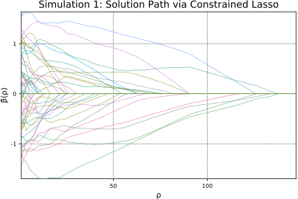
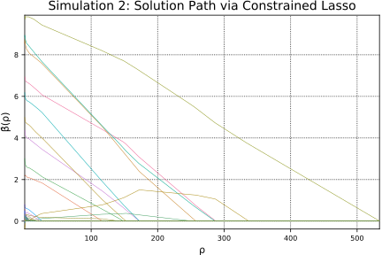

Path algorithm
The solution path algorithm is useful when the user does not have a pre-specified grid of tuning parameter values and the cofficient estimates at more than a handful of values of the tuning parameter are desired.
Sum-to-zero constraint
In this example, we will solve a problem defined by
Note that we can re-write the constraint as $\boldsymbol{A\beta} = \boldsymbol{b}$ where
First let's generate the predictor matrix X and response vector y. To do so, we need a true parameter vector β whose sum equals to 0. Note n is the number of observations n and p is the number of predictors.
n, p = 50, 100 β = zeros(p) β[1:round(Int, p / 4)] = 0 β[(round(Int, p / 4) + 1):round(Int, p / 2)] = 1 β[(round(Int, p / 2) + 1):round(Int, 3p / 4)] = 0 β[(round(Int, 3p / 4) + 1):p] = -1 srand(41) X = randn(n, p)
50×100 Array{Float64,2}:
1.21212 -0.153889 0.141533 … -0.458125 0.0951976 -2.14019
0.345895 1.30676 1.60944 -0.409901 0.323719 0.989333
-1.27859 -1.18894 0.512064 1.80509 1.62606 -1.44251
0.230616 2.54741 -0.523533 2.73358 1.07999 0.432834
-1.17103 -0.39082 0.441921 -0.179239 -0.158189 -0.640611
1.67135 0.0829011 0.964089 … -0.720038 1.99359 -0.671572
-0.614717 2.16204 -0.0602 -0.324456 -0.616887 1.11243
-0.810535 0.974719 -0.045405 0.881578 1.29611 0.696869
-1.10879 -1.32489 -1.18272 0.579381 -0.971269 -0.687591
-0.219752 -0.447897 -0.974186 -0.880804 -0.480702 -1.36887
0.0952544 -0.126203 -0.273737 … -0.264421 0.565684 -0.798719
1.4126 0.295896 -0.213161 -1.46343 -1.27144 -0.0589753
-0.418407 -0.479389 0.324243 1.96976 0.867659 -1.2999
⋮ ⋱
0.504861 -1.03911 -0.357771 0.815027 0.919037 1.07463
-0.820358 -0.955319 0.097768 0.553219 1.56424 0.10535
1.39684 1.93183 0.706641 … -0.0222014 0.987281 -0.0646814
-1.55206 0.446778 1.48206 -1.42384 -1.04209 0.0460478
0.928527 0.933087 -0.641975 -1.16347 -0.313851 -1.20434
0.380879 -0.144713 1.54374 -0.605637 0.408246 0.632131
-1.30233 -2.31664 1.51324 0.765034 -0.515553 0.984551
1.36747 1.34059 -0.114778 … 0.846682 -0.565511 -0.539113
-2.82496 -0.0447351 0.426242 -0.353497 -0.14583 -0.00304009
-0.847741 1.49306 1.15522 0.637659 1.70818 0.641035
-0.22286 -0.43932 -0.373259 0.788337 0.223785 -0.343495
1.32145 0.104516 -0.993017 -0.272744 -0.133748 0.968627
y = X * β + randn(n)
50-element Array{Float64,1}:
-9.90585
-5.40562
5.24289
-6.29951
-4.9586
-6.1342
-7.90981
2.51009
-5.79548
1.61355
-0.722766
10.4522
4.03935
⋮
0.397781
-2.6661
5.36896
-3.56537
-2.402
0.11478
-5.39248
4.38391
0.706801
-10.1066
-1.12558
14.2473
Since the problem has equality constraints only, we define the constraints as below.
beq = 0.0 Aeq = ones(1, p)
1×100 Array{Float64,2}:
1.0 1.0 1.0 1.0 1.0 1.0 1.0 1.0 … 1.0 1.0 1.0 1.0 1.0 1.0 1.0
using ConstrainedLasso β̂path1, ρpath1, objpath, = lsq_classopath(X, y; Aeq = Aeq, beq = beq);
Now we are ready to obtain the solution path using the path algorithm.
β̂path1
100×64 Array{Float64,2}:
0.0 0.0 0.0 0.0 … 0.0 0.0 0.0
0.0 0.0 0.0 0.0 0.2093 0.215544 0.222576
0.0 0.0 0.0 0.0 0.0 0.0 0.0
0.0 0.0 0.0 0.0 -0.375203 -0.411589 -0.41253
0.0 0.0 0.0 0.0 0.0 0.0 0.0
0.0 0.0 0.0 0.0 … 0.0 0.0 0.0
0.0 0.0 0.0 0.0 0.0 0.0 0.0
0.0 0.0 0.0 0.0 0.0 0.0 0.0
0.0 0.0 0.0 0.0 0.326206 0.349339 0.355867
0.0 0.0 0.0 0.0 -0.199751 -0.18084 -0.180896
0.0 0.0 0.0 0.0 … 0.0 0.0 0.0
0.0 0.0 0.0 0.0 0.0 0.0 0.0
0.0 0.0 0.0 0.0 0.0 0.0 0.0
⋮ ⋱
0.0 0.0 0.0 0.0 -0.466409 -0.455344 -0.458507
0.0 0.0 0.0 0.0 -0.40513 -0.358767 -0.358448
0.0 0.0 0.0 0.0 … 0.0 0.0 0.0
0.0 0.0 0.0 0.0 0.0 0.0 0.0
0.0 0.0 -0.0558231 -0.0953907 -0.852347 -0.877741 -0.88212
0.0 0.0 0.0 0.0 -1.08109 -1.05576 -1.06659
0.0 0.0 0.0 0.0 -0.679306 -0.621053 -0.621533
0.0 0.0 0.0 0.0 … 0.0 0.0 0.0
0.0 0.0 0.0 0.0 -1.25803 -1.20411 -1.20696
0.0 0.0 0.0 0.0 0.0 0.0 0.0
0.0 0.0 0.0 0.0 0.0 0.0 0.0
0.0 0.0 0.0 0.0 0.0 0.0 0.0
Let's see if sums of coefficients at all $\rho$ values are approximately 0.
all(abs.(sum(β̂path1, 1)) .< 1e-8)
true
We plot the solution path below.
using Plots; pyplot(); plot(ρpath1, β̂path1', label="", xaxis = ("ρ", (minimum(ρpath1), maximum(ρpath1))), yaxis = ("β̂(ρ)"), width=0.5) title!("Simulation 1: Solution Path via Constrained Lasso")

savefig("misc/sumtozero.svg")
Note the figure above is markedly smoother than in the figure obtained from passing in a sequence of tuning parameter values. This is because the solution path algorithm captures all events.
Non-negativity constraint
In this example, the problem is defined by
We can re-write the inequality constraint as $\boldsymbol{C\beta} \leq \boldsymbol{d}$ where
First we define a true parameter vector β that is sparse with a few non-zero coefficients. Let n and p be the number of observations and predictors, respectively.
n, p = 50, 100 β = zeros(p) β[1:10] = 1:10 srand(41) X = randn(n, p)
50×100 Array{Float64,2}:
1.21212 -0.153889 0.141533 … -0.458125 0.0951976 -2.14019
0.345895 1.30676 1.60944 -0.409901 0.323719 0.989333
-1.27859 -1.18894 0.512064 1.80509 1.62606 -1.44251
0.230616 2.54741 -0.523533 2.73358 1.07999 0.432834
-1.17103 -0.39082 0.441921 -0.179239 -0.158189 -0.640611
1.67135 0.0829011 0.964089 … -0.720038 1.99359 -0.671572
-0.614717 2.16204 -0.0602 -0.324456 -0.616887 1.11243
-0.810535 0.974719 -0.045405 0.881578 1.29611 0.696869
-1.10879 -1.32489 -1.18272 0.579381 -0.971269 -0.687591
-0.219752 -0.447897 -0.974186 -0.880804 -0.480702 -1.36887
0.0952544 -0.126203 -0.273737 … -0.264421 0.565684 -0.798719
1.4126 0.295896 -0.213161 -1.46343 -1.27144 -0.0589753
-0.418407 -0.479389 0.324243 1.96976 0.867659 -1.2999
⋮ ⋱
0.504861 -1.03911 -0.357771 0.815027 0.919037 1.07463
-0.820358 -0.955319 0.097768 0.553219 1.56424 0.10535
1.39684 1.93183 0.706641 … -0.0222014 0.987281 -0.0646814
-1.55206 0.446778 1.48206 -1.42384 -1.04209 0.0460478
0.928527 0.933087 -0.641975 -1.16347 -0.313851 -1.20434
0.380879 -0.144713 1.54374 -0.605637 0.408246 0.632131
-1.30233 -2.31664 1.51324 0.765034 -0.515553 0.984551
1.36747 1.34059 -0.114778 … 0.846682 -0.565511 -0.539113
-2.82496 -0.0447351 0.426242 -0.353497 -0.14583 -0.00304009
-0.847741 1.49306 1.15522 0.637659 1.70818 0.641035
-0.22286 -0.43932 -0.373259 0.788337 0.223785 -0.343495
1.32145 0.104516 -0.993017 -0.272744 -0.133748 0.968627
y = X * β + randn(n)
50-element Array{Float64,1}:
12.6173
40.3776
2.2169
27.4631
38.592
7.82023
22.7367
7.88475
-7.47037
0.621035
-4.91899
-14.9363
8.26901
⋮
7.83882
-9.30699
-29.7205
15.2482
-19.1784
14.9865
2.32728
-9.11988
-15.3472
22.9679
-0.997964
42.6068
Now set up the inequality constraint for the problem.
bineq = zeros(p) Aineq = - eye(p)
100×100 Array{Float64,2}:
-1.0 -0.0 -0.0 -0.0 -0.0 -0.0 … -0.0 -0.0 -0.0 -0.0 -0.0 -0.0
-0.0 -1.0 -0.0 -0.0 -0.0 -0.0 -0.0 -0.0 -0.0 -0.0 -0.0 -0.0
-0.0 -0.0 -1.0 -0.0 -0.0 -0.0 -0.0 -0.0 -0.0 -0.0 -0.0 -0.0
-0.0 -0.0 -0.0 -1.0 -0.0 -0.0 -0.0 -0.0 -0.0 -0.0 -0.0 -0.0
-0.0 -0.0 -0.0 -0.0 -1.0 -0.0 -0.0 -0.0 -0.0 -0.0 -0.0 -0.0
-0.0 -0.0 -0.0 -0.0 -0.0 -1.0 … -0.0 -0.0 -0.0 -0.0 -0.0 -0.0
-0.0 -0.0 -0.0 -0.0 -0.0 -0.0 -0.0 -0.0 -0.0 -0.0 -0.0 -0.0
-0.0 -0.0 -0.0 -0.0 -0.0 -0.0 -0.0 -0.0 -0.0 -0.0 -0.0 -0.0
-0.0 -0.0 -0.0 -0.0 -0.0 -0.0 -0.0 -0.0 -0.0 -0.0 -0.0 -0.0
-0.0 -0.0 -0.0 -0.0 -0.0 -0.0 -0.0 -0.0 -0.0 -0.0 -0.0 -0.0
-0.0 -0.0 -0.0 -0.0 -0.0 -0.0 … -0.0 -0.0 -0.0 -0.0 -0.0 -0.0
-0.0 -0.0 -0.0 -0.0 -0.0 -0.0 -0.0 -0.0 -0.0 -0.0 -0.0 -0.0
-0.0 -0.0 -0.0 -0.0 -0.0 -0.0 -0.0 -0.0 -0.0 -0.0 -0.0 -0.0
⋮ ⋮ ⋱ ⋮
-0.0 -0.0 -0.0 -0.0 -0.0 -0.0 -0.0 -0.0 -0.0 -0.0 -0.0 -0.0
-0.0 -0.0 -0.0 -0.0 -0.0 -0.0 -0.0 -0.0 -0.0 -0.0 -0.0 -0.0
-0.0 -0.0 -0.0 -0.0 -0.0 -0.0 … -0.0 -0.0 -0.0 -0.0 -0.0 -0.0
-0.0 -0.0 -0.0 -0.0 -0.0 -0.0 -0.0 -0.0 -0.0 -0.0 -0.0 -0.0
-0.0 -0.0 -0.0 -0.0 -0.0 -0.0 -0.0 -0.0 -0.0 -0.0 -0.0 -0.0
-0.0 -0.0 -0.0 -0.0 -0.0 -0.0 -0.0 -0.0 -0.0 -0.0 -0.0 -0.0
-0.0 -0.0 -0.0 -0.0 -0.0 -0.0 -1.0 -0.0 -0.0 -0.0 -0.0 -0.0
-0.0 -0.0 -0.0 -0.0 -0.0 -0.0 … -0.0 -1.0 -0.0 -0.0 -0.0 -0.0
-0.0 -0.0 -0.0 -0.0 -0.0 -0.0 -0.0 -0.0 -1.0 -0.0 -0.0 -0.0
-0.0 -0.0 -0.0 -0.0 -0.0 -0.0 -0.0 -0.0 -0.0 -1.0 -0.0 -0.0
-0.0 -0.0 -0.0 -0.0 -0.0 -0.0 -0.0 -0.0 -0.0 -0.0 -1.0 -0.0
-0.0 -0.0 -0.0 -0.0 -0.0 -0.0 -0.0 -0.0 -0.0 -0.0 -0.0 -1.0
Now we are ready to obtain the solution path using the path algorithm.
β̂path2, ρpath2, = lsq_classopath(X, y; Aineq = Aineq, bineq = bineq)
β̂path2
100×183 Array{Float64,2}:
0.0 0.0 0.0 0.0 … 0.783939 0.791708 0.796529
0.0 0.0 0.0 0.0 2.17561 2.18099 2.18875
0.0 0.0 0.0 0.0 2.99935 3.008 3.01471
0.0 0.0 0.0 0.0 4.30984 4.31056 4.30849
0.0 0.0 0.0 0.0 4.98995 4.99358 4.9955
0.0 0.0 0.0 0.0 … 6.18666 6.18814 6.18596
0.0 0.0 0.0 0.0 6.92076 6.92371 6.92749
0.0 0.0 0.0 0.0 8.56963 8.55907 8.54642
0.0 0.0 0.0 0.0 8.86323 8.864 8.86137
0.00616069 2.01444 2.41323 2.42264 9.8864 9.89486 9.90491
0.0 0.0 0.0 0.0 … 0.0 0.0 0.0
0.0 0.0 0.0 0.0 0.0 0.0 0.0
0.0 0.0 0.0 0.0 0.0 0.0 0.0
⋮ ⋱ ⋮
0.0 0.0 0.0 0.0 0.127693 0.122633 0.114126
0.0 0.0 0.0 0.0 0.257807 0.261246 0.265255
0.0 0.0 0.0 0.0 … 0.294213 0.285664 0.272772
0.0 0.0 0.0 0.0 0.0 0.0 0.0
0.0 0.0 0.0 0.0 0.0 0.0 0.0
0.0 0.0 0.0 0.0 0.0 0.0 0.0
0.0 0.0 0.0 0.0 0.0 0.0 0.0
0.0 0.0 0.0 0.0 … 0.0 0.0 0.0
0.0 0.0 0.0 0.0 0.0838146 0.0914735 0.0978112
0.0 0.0 0.0 0.0 0.200482 0.202642 0.201151
0.0 0.0 0.0 0.0 0.0 0.0 0.0
0.0 0.0 0.0 0.0 0.0 0.0 0.0
We plot the solution path below.
plot(ρpath2, β̂path2', label="", xaxis = ("ρ", (minimum(ρpath2), maximum(ρpath2))), yaxis = ("β̂(ρ)"), width=0.5) title!("Simulation 2: Solution Path via Constrained Lasso") savefig("misc/nonneg.svg")

Follow the link to access the .ipynb file of this page.